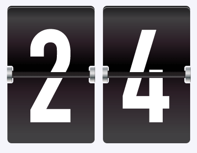
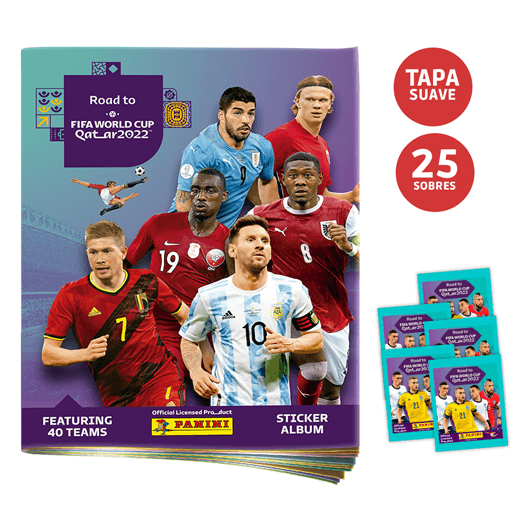

QATAR 2022: PANINI ANUNCIÓ FECHA EN LA QUE SALDRÁ EL ÁLBUM DEL MUNDIAL

Diseño Previo

¿Qué vendrá en el álbum Panini del Mundial?
Al igual que en las versiones anteriores, incluirá a jugadores emblemáticos de nuestra época que estarán disputando en la Gran Fiesta del Futbol, como lo son Lionel Messi, Cristiano Ronaldo, Kevin de Bruyne, Karim Benzema, Kylian Mbappé, entre otros.
Pero no solo vendrán ellos, también se planea que estén presentes cada uno de los jugadores que conformarán las 32 selecciones participantes en la máxima justa, así como el calendario completo de la competencia, los estadios donde tendrán lugar los partidos, un póster representando a cada sede de la próxima Copa del Mundo y algunos datos curiosos en torno a la historia de los mundiales de futbol.